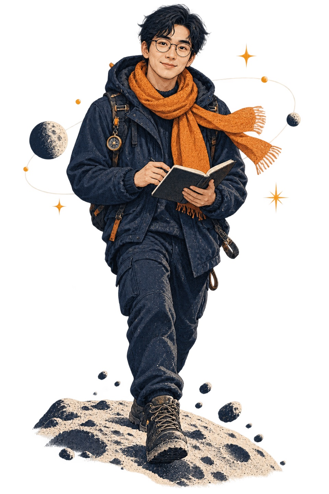
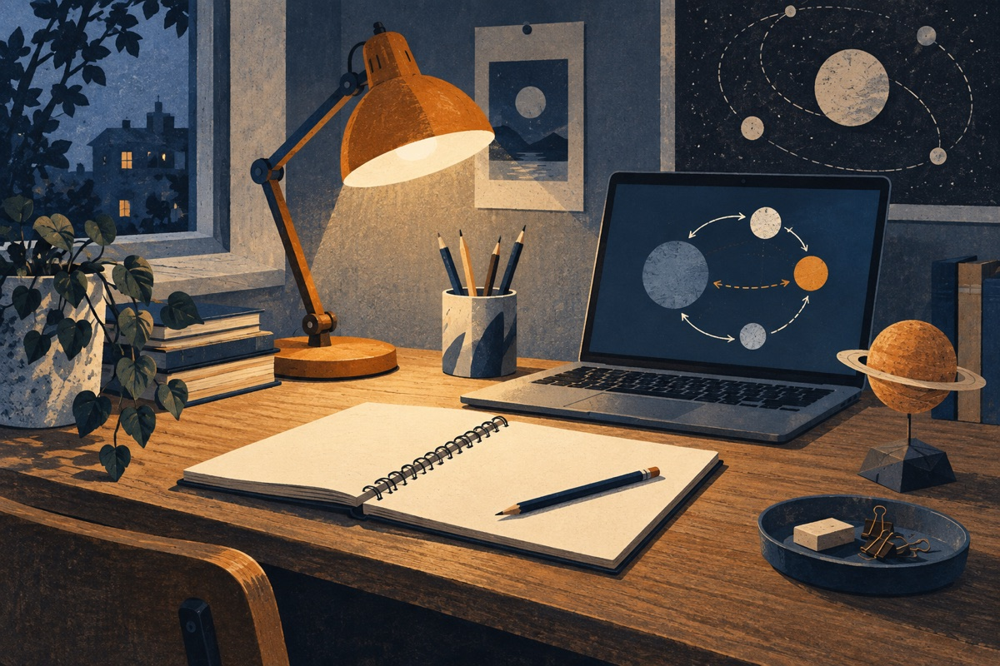

01 / 03
AI Agent
會分步完成任務的助手
- 這是什麼
- 你給它一個目標，它會拆步驟、使用工具，再把結果整理給你。
- 為什麼重要
- 它能處理多步驟工作，但每一步仍需要你確認方向與結果。
- 怎麼開始
- 挑一件小事，例如整理旅遊資料，請它先列計畫，再逐步執行。

概念導覽
每個名詞都從一個簡單問題說起：它是什麼、為什麼值得認識，今天可以怎麼試。
會分步完成任務的助手
用自然語言做出程式原型
為特定工作設計的 AI 工具

從自己的書桌開始，就能做第一個實驗。
學習路線
不用一次學完所有工具。先理解、再驗證，最後做出一件你真的用得上的小作品。
選生活中你已略懂的主題，請 AI 用白話解釋。目標：能用自己的兩句話重述。
請 AI 標出不確定之處，找一個可靠來源核對。目標：知道哪些話還需要查證。
挑一件重複工作，如整理筆記，明確說出輸入與期望結果。目標：比較自己做與 AI 協助的差異。
完成一張旅行規劃表、一頁介紹網站，或任何能分享的成果。目標：自己看懂並能修改它。
關於我
我把難懂的 AI 詞彙，寫成一般人能讀、也能親手試的筆記。每篇內容都從一個真實問題開始，讓概念有落腳的地方。
這裡會持續分享入門解說、工具觀察和小練習。希望你看完之後，能帶著自己的問題繼續探索。
今天的第一步
把下面這句話貼給你手邊的 AI 工具，換成自己的主題。讀完後，試著用自己的話說一次，再查證一個關鍵資訊。
請用日常白話解釋「我正在好奇的 AI 主題」。先給我一個生活例子，再說明它能做什麼、不能保證什麼，最後列出一件我今天可以試的小事。遇到不確定的資訊，請直接標明。